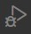

django
django
Django is a free and open source framework for building web apps with Python. It is used for the "backend".
NOTE: My notes are based on George Nigel book
"Build a Website With Django 3: A complete introduction to
Django"
How Django works
Django is a Model-View-Controller (MVC) framework. MVC is a
software design pattern that aims to separate a software application into three interconnected parts.
NOTE: MVC is called MTV (Model Template View) in Django.
overview
- the model:
provides the interface with the database containing the application data. It retrieves data from the database, which is requested by the view. - the view template:
contains the logic that decides what information to present to the user and collects information from the user to send to the view - the controller view:
manages business logic for the application and acts as an information broker between the model and the template. It sends the packaged and formatted data to the template.
the model

Django's models provide an Object-relational Mapping (ORM) to the underlying database. ORM is a powerful programming technique that makes working with data and relational databases much easier.
Object (ORM):
Most common databases are programmed with some form of Structured
Query Language (SQL), however, each database implements SQL differently. SQL can be
complicated and challenging to learn. An ORM tool, on the other hand, provides a simple mapping
between an object (the O in ORM) and the underlying database. This means the programmer need not
know the database structure, nor does it require complex SQL to manipulate and retrieve data. In
Django, the model is the object mapped to the database. When you create a model, Django creates a
corresponding table in the database, without you having to write a single line of SQL.
Django prefixes the table name with the name of your Django application.

Relationship (ORM):
The model also links related information in the database. In
the example on the right a second model is created to keep track of a user's course enrollments.
Repeating all the user's information in the "yourapp_Course" table would be against good design
principles, so we instead create a relationship between the "yourapp_Course" table and the
"yourapp_UserProfile" table. This relationship is created by linking the models with a "foreign
key"
There are five databases officially support:
SQLite*,
PostgreSQL, MySQL, MariaDB, Oracle*
Django installs and configures SQLite automatically.
the template
A Django template is a text file designed to separate an application's data from the way it is presented. Django's templates are not limited to HTML. The design of Django's templates is based on several core principles:
- A template system should separate program logic from design.
- Templates should discourage redundancy (Don't Repeat Yourself (DRY)).
- The template system should be safe and secure, code execution in the template must be forbidden.
Separate Logic From Design
The Django template language (DTL) is a plain-text scripting language that uses tags to provide presentation logic for deciding what content to display in the template.
for example: <p>Dear {{ person_name }},</p>
- the script in bold is a Django variable tag, when your browser renders this template, Django will replace the variable {{ person_name }} with the name passed to the template by the view
- works with Html, JavaSCript, CSS and Frameworks like Bootstrap
Don't Repeat Yourself

Django uses template inheritance which helps minimize repetition, redundant code and make it also easier to apply changes.
The parent template contains content common to the entire website, the child templates inherit those common features but only contain unique content in there template.
Changes can be applied to the parent templed which will affect the entire side, rather then to every single side.
Template Security
Code execution is forbidden on templates.
The DTL provides display logic only, this includes:
- Displaying variables. This can be simple text like a user's name or more complex data like HTML formatted text.
- Choosing which content to display based on logical checks. E.g., if a user is logged in, then display a user menu or user-only content.
- Iterating over lists of data. Most often used to insert database information into HTML lists.
- Formatting data. E.g., date formatting, text manipulation and other filters that act on the data.
Things you can't do in a Django template:
- Execute Python code
- Assign a value to a variable
- Perform advanced logic
- Django's templates adds additional security features like automatically escaping all strings, Cross-Site Scripting protection and Cross-Site Request Forgery protection.
- These restrictions only apply to the Django Template Language. There are no restrictions on you adding JavaScript, for example, to Django templates.
the views
Django's views are the information brokers of a Django application. A view sources data from your database (or an external data source or service) and delivers it to a template. For a web application, the view delivers webpage content and templates, for a RESTful API this content could be properly formatted JSON data.
- The view decides what data gets delivered to the template, either by acting on input from the user or in response to other business logic and internal processes.
- Each Django view performs a specific function and has an associated template.
- Views are represented by either a Python function or a method of a Python class.
- Class-based views add extensibility to Django's views, as well as several built-in views that make creating common views (like displaying a list of articles) easier to implement.
Django has built-in views for many common display tasks.
- the 404 (page not found), 500 (server error), 403 (HTTP forbidden), 400 (bad request) view
- ListView for displaying a list of data objects (e.g., list all articles)
- DetailView for displaying a single object (e.g., individual article)
- RedirectView for redirecting to another URL
- FormView for displaying a form
- Additional class-based generic date views for showing day, week, month and yearly collections of objects like blog posts and articles.
URLconf, Tying it all Together
Tells the view what to display in the browser based on what the user has requested.
Navigation in a Django website is the same as any other website. Pages and other content are accessed via a Uniform Resource Locator (URL).
When a user clicks on a link on a website:
- a request for that URL is sent to Django
- Django checks the "URL Configuration (URLconf) in urls.py. When Django finds a URL that matches the requested URL, it calls the view associated with that URL
- the selected view then renders the content to a template, as per the business logic in the view, and sends the rendered content back to your browser for display
Setting up Django
Creating a Django Project
- install the Django package into your projects "virtual environment"
pipenv install django - activate your "virtual environment"
pipenv shell - create a Django project (a good name is config)
django-admin startproject PROJECT_NAME* .*
django "project" file structure
- the PROJECT_NAME folder contains the essential Python files
- the manage.py file which is created next to the PROJECT_NAME folder, is a Python "wrapper" wrapped around "django-admin"
- you can rename the project folder to easier mark it as the project folder (Django does not care how it is called)

Creating a "Django App"
Every Django project is a collection of various apps. Each app provides a certain type of functionality.
- create a new django app
python manage.py startapp APP_NAME*
NEW_APP structure
folder / file explanation migrationis a folder in which we generate database tables admin.pydetermines how the app will look apps.pyis where the app is configured models.pymodel classes are defined in this app, to pull out data from the database and present it to the user test.pycontains the unit tests urls.pyneeds to be manually created if needed, is where the "urls" are "mapped" to the "views" views.pyis a request handler - every app needs to be registered
- open the settings.py in the PROJECT_NAME directory
- under
INSTALLED_APPadd the name of the "app" to the list
example: register new app

INSTALLED_APPS = [ 'django.contrib.admin', 'django.contrib.auth', 'django.contrib.contenttypes', 'django.contrib.sessions', 'django.contrib.messages', 'django.contrib.staticfiles', 'NEW_APP_1', 'NEW_APP_2', ]predefined django apps explanation django.contrib.admincreates an admin interface to manage data django.contrib.authis used to authenticates users django.contrib.sessionsa session is a temporary memory on the server to manage user data, can be deleted django.contrib.messagesis used to display onetime messages to the user django.contrib.staticfilesserves static files like images, css files, ...
running django on a local server
- starts the local server on port 8000* (can be viewed in the
browser*)
python manage.py runserver - to quit the server press
CTRL+cin the terminal
HTTP request/response cycle
example code
- user adds a "slug"*
to the url address
for example: /hello - Django look always first in the
PROJECT_NAME/urls.pyfor the matching path inurlpatterns = []
for example:
#...PROJECT_NAME/urls.py
from django.contrib import admin
from django.urls import path, include
urlpatterns = [
path('admin/', admin.site.urls),
path('hello/', include('pages.urls'))
] - the search is usually redirected to the apps
urls.pyfor the matching path inurlpatterns = [](the apps urls.py needs to be manually created)
for example:
#...pages/urls.py
from django.urls import path
from .views import homePageView
urlpatterns = [
path('', homePageView, name ='home'),
]


writing code
"Views" and mapping urls to it
Writing "Views" (request handler)
In "views" we handle requests by defining functions that take a request and then respond.
Django uses request and response objects to pass state through the system.
When a page is requested, Django creates an HttpRequest object that contains metadata about the request.
Then Django loads the appropriate view, passing the HttpRequest as the first argument to the view
function.
Each view is responsible for returning an HttpResponse object.
from django.http import HttpResponse
def say_hello(request):
return HttpResponse('Hello World')
The "view" now needs to be "mapped" to a "URL" so that the function will be called.
Mapping URLs to Views
- the file for the "URL"s is by convention named urls.py
urlpatternsis a special variable Django is looking for and is set to an array or "url pattern objects".
from django.urls import path
from . import views # '.'stands for the current folder
urlpatterns = [
path('hello/', views.say_hello)
]
Need to be imported into the main url configuration.
main urls.py
located in the "Django project folder" under "urls.py"
- import the include function from django.urls
from django.urls import include - add the "url path" to the "urlpatterns"
urlpatterns = [ path('...'), # other paths may already set path('playground/', include('playground.urls')) ]
When the user adds to the http address "/playground/hello", then he will be redirected to a side which
has the text from the first "urls.py" "Hello World".
NOTE: The starter side displays an error "404",
but the redirection still works.
using templates
What in other framework's is called a "view" is in Django a "template". They allow us to display html pages.
- create a "templates" folder in the "playground" app directory
- inside the "templates" folder, create a "hello.html" file with some html (it dose not need a "boiler platte")
- change the "views.py" in the folder "playground"
from django.http import HttpResponse def say_hello(request): # "return HttpResponse('Hello World')" old line, take out return render(request, 'hello.html')
The path from the landing page (.../playground/hello) still works but now a html page is rendered.
debug django
debugging with VSCode
set up the VSCode debugger
- click on the "Run and Debug" button 
or use the short cut
CTRL+SHIFT+d - click on "create a launch.json file", choose the "workspace" folder in which the "launch.json" file will be created, select environment "Django"
- open the launch.json file from the ".vscode" folder and add another port number then the one on
which
the local server is running to "args" (not "8000")
"configurations": [{ "args": [ "runserver", "9000" ], }]
how to use the VSCode debugger
- set the breakpoint by clicking on the code line
- run the debugger
- click the link in the terminal while holding
CTRL - a new window opens in the browser, if needed, navigate in the "app" to the part where the "breakpoint" is set
- the program is executed till it gets to the first "breakpoint"
- you can see the attributes of the variable in the debugger window (in this example it is the
"request" object)
- with "step over" we can move to the next line
- variables which the debugger has "passed" can be checked in the debugger window or added in the
"watch"
window by clicking on the
+icon - NOTE: As you "step through" the code, the browser window changes to the exact same stages as
it
is in the code. The debugger and the browser output are linked, that is also true the other way
around,
you don't see anything in the debugger window if you have not navigated to the right place in the
browser.
- step in you to not just see the result of the function but to also step into the function which may be defined somewhere else
- step out allows you to leave a function you have stepped into before
- restart the debugger from the beginning of the breakpoint